Sözleşme, tutanak, teklif ve formlarınızı kurum içi ve kurum dışı imzacılara sırayla gönderip toplayın — belge sunucunuzdan hiç çıkmadan, nitelikli elektronik imza ve nitelikli zaman damgasıyla.
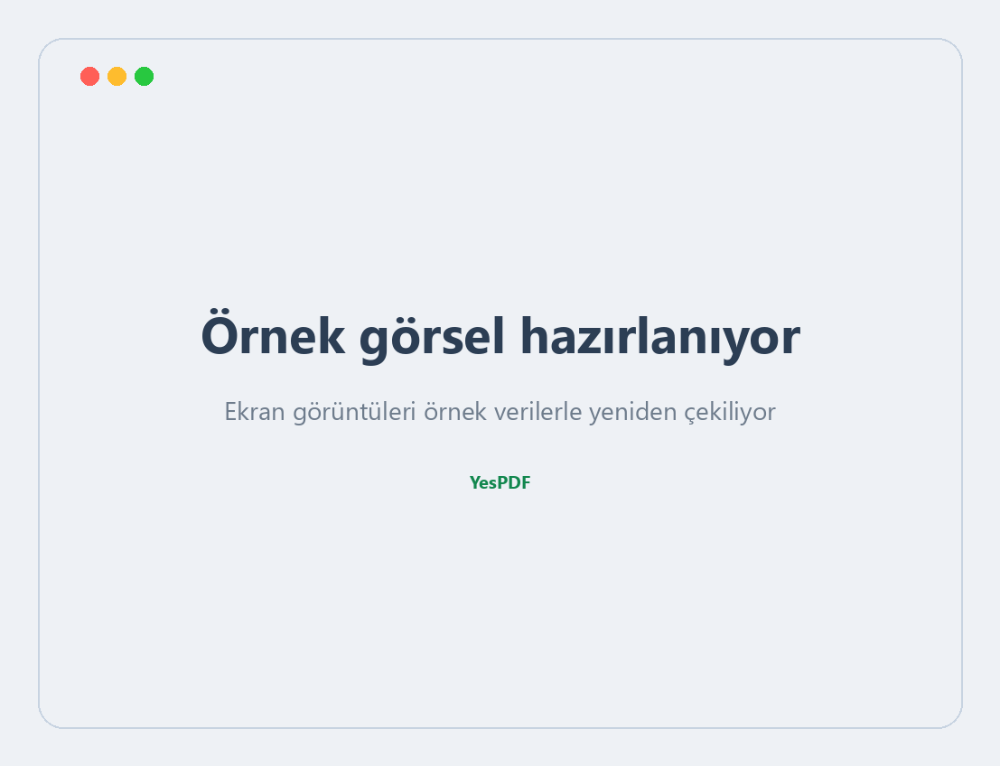
İmza, kullanıcının kendi e-imza aracında (USB token) oluşur; sunucu yalnızca belgenin özetini (hash) imzalatır.
İmzalanacak belge hiçbir bulut servisine gönderilmez. Kurum dışı imzacı bile belgeyi sizin sunucunuz üzerinden görür.
Yetkili ESHS'lerin nitelikli sertifikaları. İmza anı, yerel saatten bağımsız olarak nitelikli zaman damgasıyla mühürlenir.
Bağlantı açılması, doğrulama kodu, görüntüleme, imza ve hatırlatma — her adım zaman, IP ve cihaz bilgisiyle denetim raporunda.
Abonelik zorunluluğu, dışarıya veri aktarımı ve internet bağımlılığı yok. Tamamen kurum içi (on-premise).
Belgeyi seçin, imzacıları ve rolleri belirleyin, alanları yerleştirin, gönderin.
Kütüphanenizden bir belge seçin ya da yeni bir PDF yükleyin. Word, Excel, PowerPoint ve XPS belgeleri sisteme yüklendiğinde otomatik olarak PDF'e dönüştürülür.
Kurum içinden kullanıcı seçin, kurum dışından e-posta ile kişi ekleyin. Sıralı akışta imzacılar birbirini bekler; aynı adıma birden çok kişi koyarsanız paralel imzalarlar.
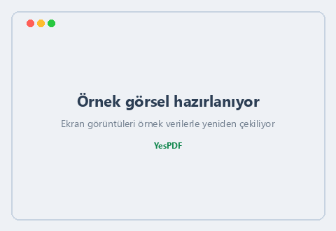
Belgede imzanın görüneceği yere tıklayın, kişiyi seçin. Paraf alanı da aynı şekilde eklenir; "her sayfaya paraf" seçeneğiyle tüm sayfalara tek tıkla dağıtılır.
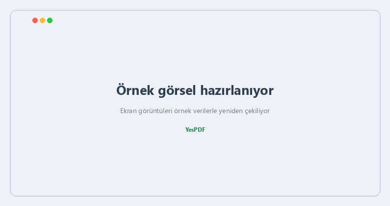
İmza türünü, doğrulama karesini ve talep dilini belirleyin.
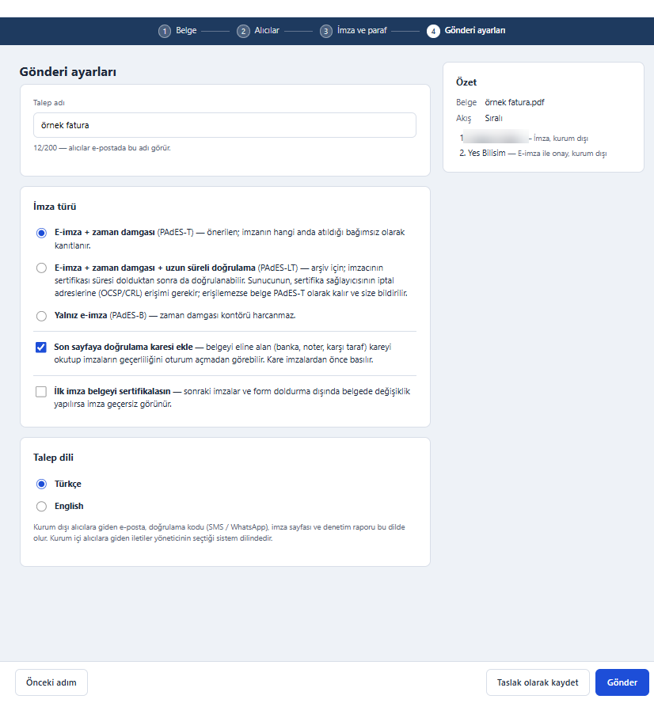
İmza, kullanıcının bilgisayarındaki YesPDF İmza Aracı ile kendi e-imza token'ında oluşur; belge dışarı gönderilmez. Araç yalnız imza anında devreye girer.
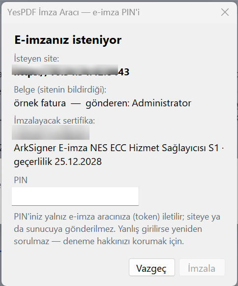
Kurum dışı imzacının YesPDF hesabına ihtiyacı yoktur; kendisine özel, tek kullanımlık bağlantıyla erişir.
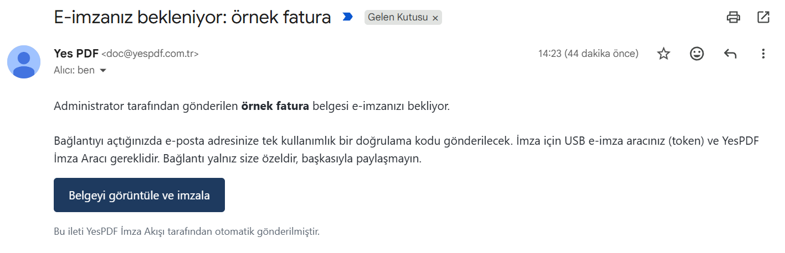
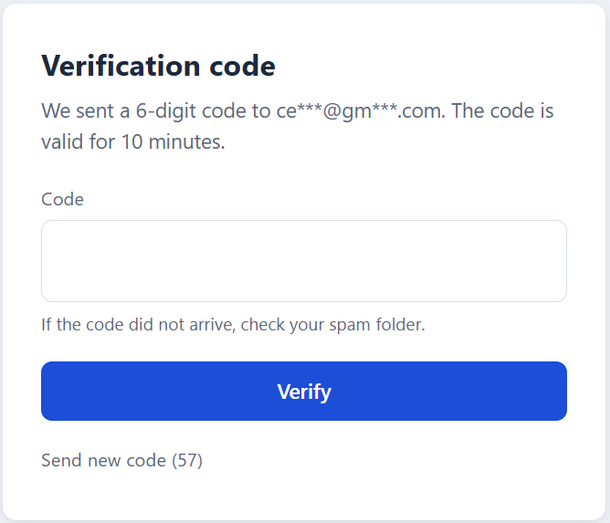
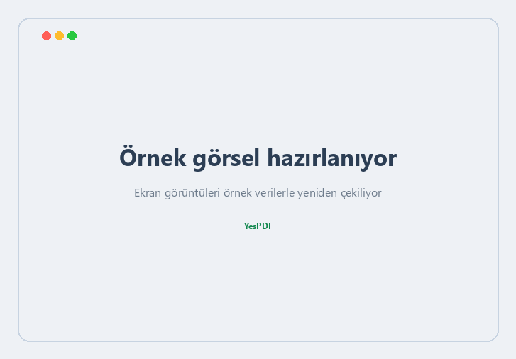
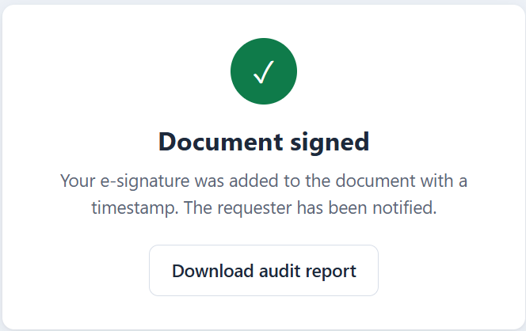
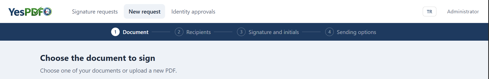
İmzanın atıldığı an, yerel bilgisayar saatinden bağımsız olarak nitelikli TSA ile mühürlenir. TSA sağlayıcısı yapılandırılabilir; TürkTrust entegrasyonu hazırdır.
Zaman damgası imzaya gömülür; LT ile sertifika süresi dolduktan sonra bile doğrulanabilir.
Belgeyi eline alan taraf, kareyi okutup imzaların geçerliliğini oturum açmadan görür.
Sunucu yalnızca belgenin özetini imzalatır; belgenin kendisi token'dan çıkmaz.
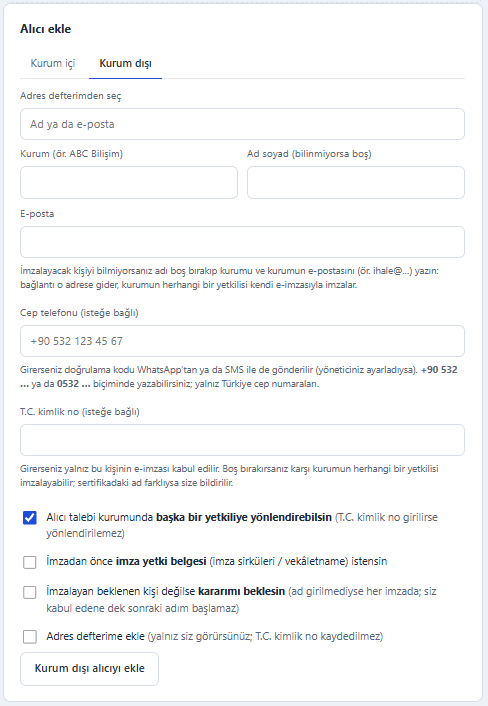
Talep listesi, olay geçmişi, otomatik hatırlatma ve tek PDF'te toplanan denetim raporu.
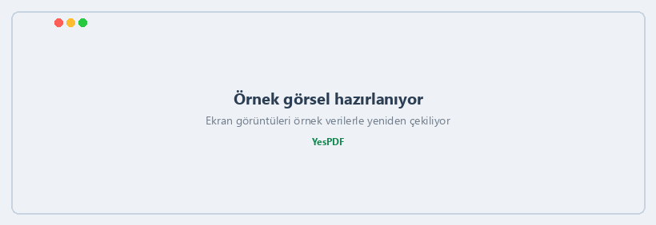
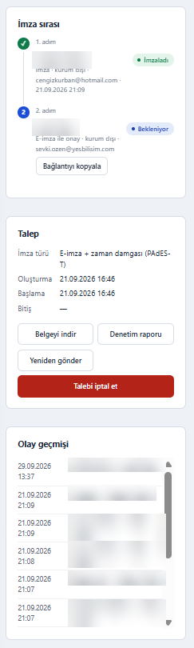
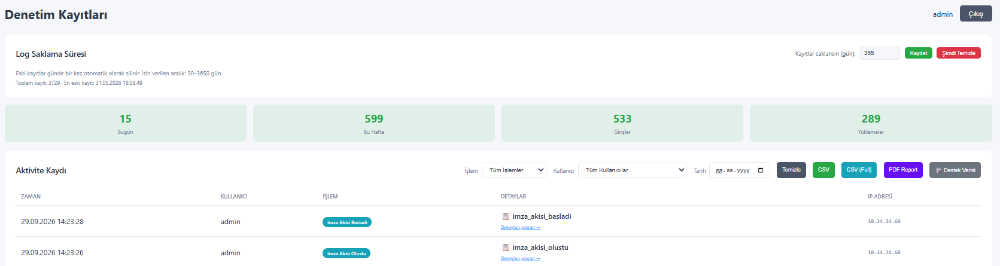
| İmza biçimi | PAdES-B, PAdES-T, PAdES-LT |
| Özet algoritması | SHA-256 |
| Zaman damgası | Nitelikli TSA (yapılandırılabilir) — TürkTrust entegrasyonu hazır |
| Sertifika | Türkiye'de yetkili ESHS'lerin nitelikli sertifikaları; USB token |
| İmza aracı (OS) | Windows, macOS (Apple noter onaylı) |
| Sürücüler | TÜBİTAK AKİS, SafeNet, A.E.T., Gemalto, Feitian, Atos, Charismathics |
| Akış türleri | Tek imzacı, sıralı, paralel; İmza / Onay / E-imza ile onay |
| Kurum dışı doğrulama | E-posta, SMS, WhatsApp ile tek kullanımlık kod; isteğe bağlı T.C. kimlik no eşleşmesi |
| Doğrulama | QR'lı doğrulama sayfası, denetim raporu PDF'i |
| Diller | Türkçe, İngilizce |
| Kurulum | Kurum içi (on-premise) — belge kurumdan çıkmaz |
Belge standart PDF'tir ve her okuyucuda açılır. Adobe'un güven listesinde Türkiye'deki elektronik sertifika hizmet sağlayıcıları yer almadığı için Acrobat sertifikayı kendiliğinden tanımaz. İmzaların geçerliliği YesPDF'in doğrulama sayfasından veya kurumun ESHS kök sertifikasını kendi Adobe güven deposuna tanıtmasıyla görüntülenir.
Hayır. Kendisine özel bağlantı ve tek kullanımlık kodla erişir; imza için bilgisayarına yalnızca YesPDF İmza Aracı'nı kurar.
Değiştirilirse imza geçersiz görünür. "Sertifikasyon" seçeneği açıksa, sonraki imzalar ve form doldurma dışındaki her değişiklik tespit edilir.
Talepte eşleşme için girilen T.C. kimlik numarası adres defterine kaydedilmez; kayıtlarda maskelenerek gösterilir.
Hayır. Araç yalnız imza anında devreye girer, belgeyi dışarı göndermez; sunucu yalnızca belgenin SHA-256 özetini imzalatır. PIN sayfaya ya da sunucuya hiçbir zaman iletilmez.
Kurumsal İmza Akışı'nı verileriniz kurumunuzdan çıkmadan deneyimleyin. Ekibimiz kurulum ve entegrasyonu birlikte planlar.